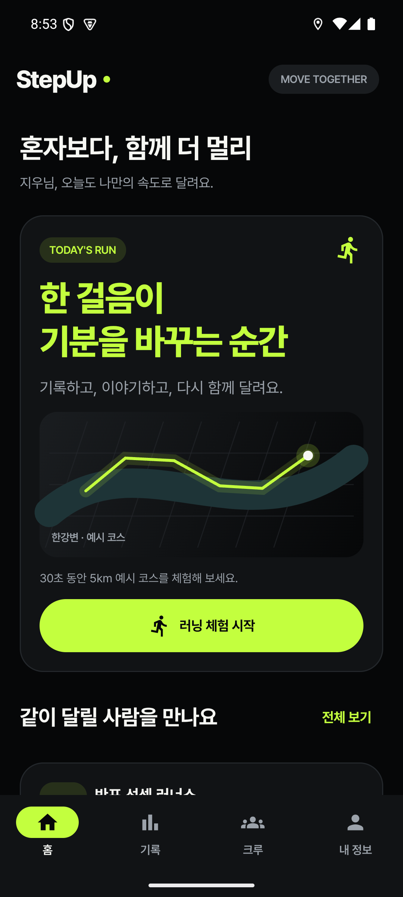
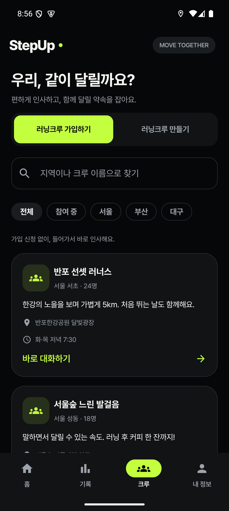
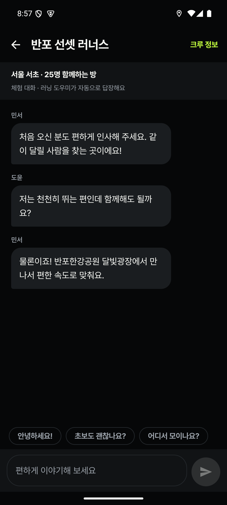

달리면, 기록이 되고.
나만의 속도와 지나온 길을
러닝 체험으로 가볍게 만나보세요.
YOUR PACE. OUR CREW.
Powered by GIWA
나만의 러닝 기록부터 함께 달릴 크루까지.
다음 러닝이 기다려지는 이유, StepUp.
Android 8.0+ · 약 20MB · 로그인 없이 MVP 체험



실제 MVP 화면 · 눌러서 둘러보세요
나만의 속도와 지나온 길을
러닝 체험으로 가볍게 만나보세요.
내 동네 크루를 찾거나 직접 만들고.
가입 승인 없이 바로 들어가요.
첫 인사부터 함께 달릴 약속까지.
부담 없는 대화로 시작해요.